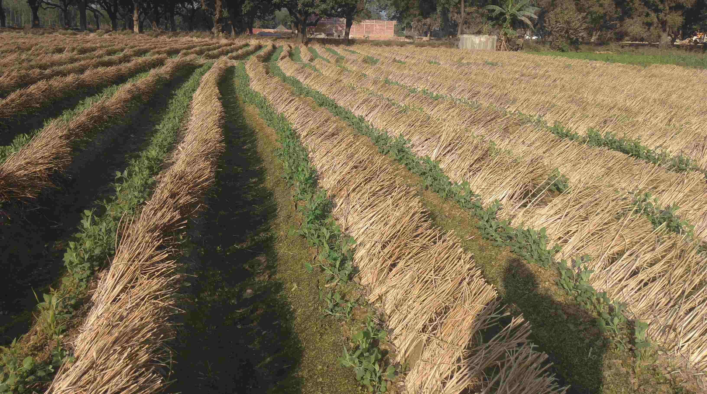
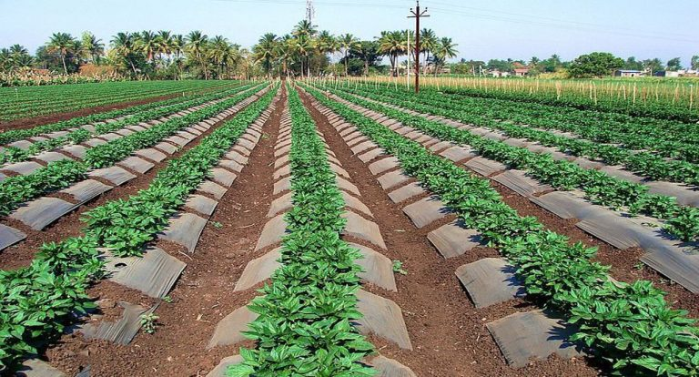
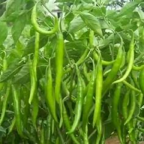
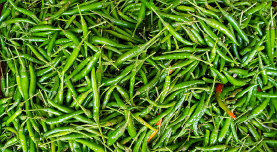
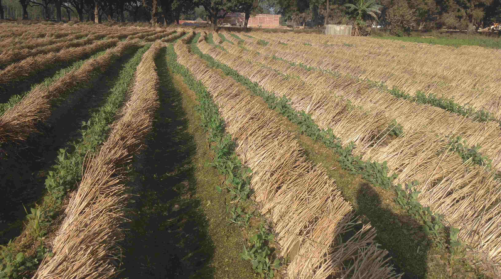
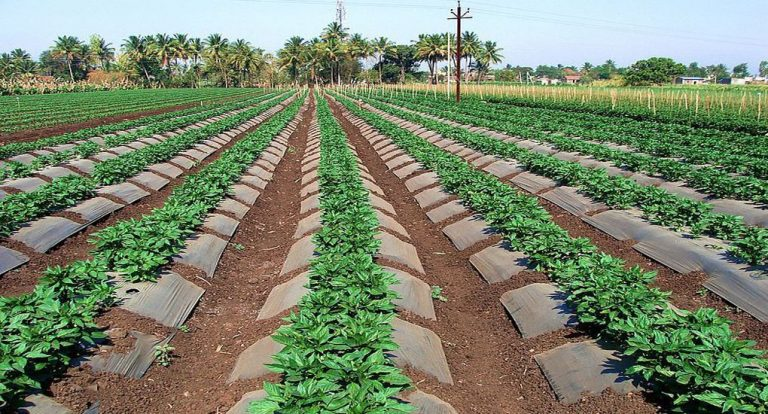
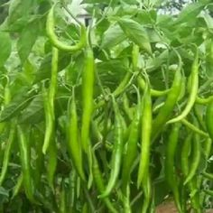
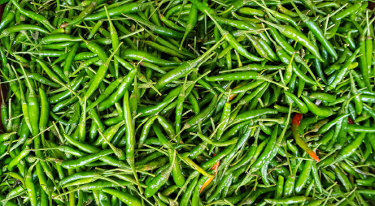

मिर्च की खेती और रोग रोकथाम
 







मिर्च को मसाले की मुख्य फसल माना जाता है जिसका प्रयोग अमीर गरीब सभी घरों में नियमित रूप से किया जाता है मिर्च का उपयोग हरी तथा पकी दोनों प्रकार से किया जाता है
इसका प्रयोग कच्चे सलाद के रूप में, अचार बनाकर, सब्जी और मसाले के रूप में भी करते हैं
मिर्च की खेती के लिए गर्म और आर्द्र जलवायु सबसे बढ़िया रहती है समुद्र तल से लेकर 1500 मीटर ऊंचे स्थानों तक में मिर्ची की खेती सफलतापूर्वक की जा सकती है
जिन स्थानों में 75 सेंटीमीटर से लेकर 125 सेंटीमीटर के मध्य वर्षा होती है वहां इस फसल की अच्छी खेती होती है पौधों की वृद्धि के समय अधिक वर्षा इसके लिए घातक होती है
कम वर्षा वाले स्थानों में सिंचाई का उचित प्रबंध न होने पर मिर्च की अच्छी उपज ली जा सकती है।
अगर आप मिर्ची की सफल खेती करना चाहते हैं तो इसके लिए भारी उपजाऊ दोमट भूमि की आवश्यकता होती है
जिसमें पानी के निकास का बहुत ही बढ़िया प्रबंध हो मृत्तिका भूमि इस फसल के लिए बहुत ही बढ़िया रहती है जिन खेतों में वर्षा का पानी सूख जाता है
वहां मिर्च की खेती नहीं करनी चाहिए
क्योंकि थोड़े समय तक भी पानी भरा रहने पर फसल सड़ जाती है।
मिर्च की खेती के लिए भूमि की तैयारी
किसान भाइयों मिर्च की खेती के लिए भूमि की अच्छी तैयारी की आवश्यकता होती है
खेत को एक बार मिट्टी पलट हल से जोतना चाहिए। तीन से चार बार देशी हल से जोतना चाहिए इसके बाद पटेला चलाकर खेत को समतल तथा ढेले रहित बना देना चाहिए
देसी हल के स्थान पर कल्टीवेटर के प्रयोग से इसकी तैयारी कम समय और कम लागत में हो जाती है।
मिर्ची की खेती के लिए बीज की मात्रा
क हेक्टेयर खेत की रोपाई करने के लिए लगभग 1 किलोग्राम बीज की पौध पर्याप्त रहती है।
मिर्ची की बुवाई तथा रोपाई का समय
जाड़ों की फसल के लिए बीज की बुवाई जून-जुलाई में की जाती है और रोपाई अगस्त-सितम्बर में की जाती है।
गर्मी की फसल के लिए बुवाई नवंबर-दिसंबर में की जाती है और रोपाई फरवरी-मार्च में की जाती है।
पाला पड़ने वाले क्षेत्रों में मिर्च की बुवाई अप्रैल-मई और रोपाई मई-जून में की जाती है।
पहाड़ी क्षेत्रों में बुवाई मार्च-अप्रैल में और रोपाई मई-जून में की जाती है।
जाड़े वाली फसल की बुवाई अगस्त में और रोपाई सितम्बर में करते हैं तथा गर्मी वाली फसल की बुवाई नवंबर में तथा रोपाई दिसंबर में करते हैं।
पौध तैयार करना
एक हेक्टेयर खेत के लिए पौध तैयार करने के लिए लगभग 200 वर्गमीटर क्षेत्र में बीज बोना पड़ता है।
पौध की रोपाई
मिर्च के पौधे को उखाड़ने से पहले हल्की हल्की सिंचाई कर लेनी चाहिए ताकि पौधे जड़ सहित आसानी से उखड़ सकें। पौधे की रोपाई तैयार हुए खेत में कतारों में की जाती है।
जहां तक संभव हो रोपाई शाम को ही करनी चाहिए। रोपाई के तुरंत बाद सिंचाई कर देनी चाहिए।
खाद और उर्वरक
मिर्च की खेती में से अच्छी उपज लेने के लिए खाद और उर्वरक दोनों का ही प्रयोग करना आवश्यक होता है।
खेत की तैयारी करते समय ही पौधों की रोपाई से कम से कम 20 से 25 दिन पहले खेत में 250 से 300 क्विंटल प्रति हेक्टेयर सड़ी हुई गोबर की खाद डाल देनी चाहिए।
और उर्वरकों का प्रयोग मिट्टी की जांच के अनुसार ही करना चाहिए अथवा किसी विशेषज्ञ की सलाह के अनुसार करना चाहिए।
मिर्च की खेती के लिए सिंचाई का प्रबंधन
मिर्च की फसल में हर समय सामान्य नमी खेत में बनाए रखना बहुत ही जरूरी होता है
इसके लिए गर्मियों में 6 से 8 दिन के अंतर से तथा जाड़ों में 10 से 15 दिन के अंतर से सिंचाई करते रहना चाहिए वर्षा ऋतु में सिंचाई की आम तौर पर आवश्यकता नहीं पड़ती है
परंतु लंबे समय तक वर्षा न होने की स्थिति में सिंचाई अवश्य कर देनी चाहिए क्योंकि सूखे की स्थिति में फूल और फल झड़ने लगते हैं।
फूल और फल बनने की अवस्था में यदि खेत में नमी की कमी हो जाती है तो फूल तथा नव विकसित फलियों के झड़ जाने से हानि तो होती ही है
साथ ही मिर्च की फलियां ठीक से भर नहीं पाती हैं और उनके आगे के सिरे सिकुड़ जाते हैं
जिसके बाद में उनका बाजार भाव घट जाता है तथा फलियों का रंग भी हल्का रह जाता है।
मिर्च की निकाई तथा गुड़ाई
मिर्च की खेती में लगभग दो से तीन बार निकाई गुड़ाई की आवश्यकता होती है ताकि खरपतवार पर नियन्त्रण रखा जा सके।
चूंकि मिर्च के पौधे की जड़ें कम गहरी (5-6cm) होती हैं इसलिए गुड़ाई हल्की ही करनी चाहिए। मिर्च की पुष्पवस्था में निराई-गुड़ाई कम से कम करनी चाहिए
क्योंकि इस समय निराई तथा गुड़ाई करने से फूल तथा फलियां गिरती हैं जिससे उपज पर बहुत प्रभाव पड़ता है।
मिर्च की फसल में खरपतवार
मिर्च की रोपाई से पहले यदि लासो अथवा टोक-ई-25 आदि खरपतवारनाशी रसायनों का खेत में छिड़काव कर दिया जाए तो खरपतवार बहुत कम ही उग पाते हैं
और रहे बचे खरपतवार निकाई तथा गुड़ाई करने से समाप्त हो जाते हैं।
मिर्च की फसल के मुख्य रोग तथा उनका नियंत्रण
मोजेक
यह रोग वायरस के कारण होता है जिसे माहू कीट फैलाते हैं रोगी पौधों में फूल तथा फलियां कम लगती हैं जो लगती हैं, वह खुरदरी होती हैं।
रोगी पौधों को उखाड़ कर जला देना चाहिए।
मिर्च की फसल के प्रमुख कीड़े तथा उनका नियंत्रण
थ्रिप्स
थ्रिप्स बहुत छोटे-छोटे कीड़े होते हैं और जब तक पौधों को ध्यान से ना देखा जाए तब तक इनका पता ही नहीं चलता है यह पौधों के विभिन्न भागों से रस चूसते हैं।
मिर्च के फलने की अवस्था में डायजिनान दवा का छिड़काव करना चाहिए तथा छिड़काव के 6 से 7 दिन बाद ही फलियां तोड़नी चाहिए।
माहू
यह छोटे-छोटे हरे तथा पीले रंग के कीड़े होते हैं जो पत्तियों, फूल तथा फलियों का रस चूसते हैं यह कीड़ा ही रोग के विषाणुओं को फैलने में भी सहायक होते हैं।
इनकी रोकथाम के लिए भी वही दवाएं प्रयोग में लाई जाती हैं जो कि थ्रिप्स के नियंत्रण के लिए बताई गई हैं।
मिर्च की फलियों की तुड़ाई
मिर्च की तुड़ाई प्रयोग के आधार पर निर्भर करती है हरी मिर्च शिमला मिर्च जब पूर्ण आकार की हो जाती है तो उन्हें तोड़ दिया जाता है।
सलाद, सब्जी तथा चटनी के लिए मिर्च को लाल होने से पहले ही तोड़ लेना चाहिए इनकी तुड़ाई हाथ से ही की जाती है और सप्ताह में दो बार की जाती है
अचार वाली मिर्च जब पूरी तरह लाल हो जाती है तब तोड़ दी जाती है लेकिन उनको सूखने से पहले ही तोड़ लेना चाहिए
मसाले के लिए मिर्च को पूर्णतया पकने के बाद जब सूखने के लक्षण दिखाई देने लगे तो तोड़ लेना चाहिए।